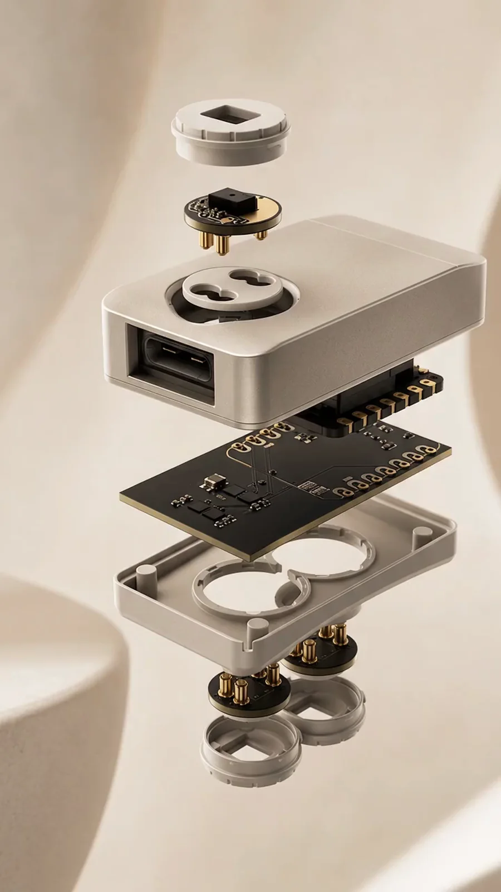

PPG
Built and tested

Optical pulse. Heart rate, variability and perfusion at the wrist.
Two body slots. One for the environment.
A reusable core. Three swappable sensor pucks. You choose what each configuration measures, and you get the raw data underneath it.

The choice today
It measures what its maker decided to measure and hands back a score instead of a signal. Your question stops where their product roadmap stops.
Electronics, firmware, enclosure, certification, manufacturing. Years of engineering and a budget most teams do not have, and a fixed sensor set at the end of it.
Keep the core, the radio, the enclosure and the software. Change only the part that senses. That is the whole of what we are building.
PPG
Built and tested
Optical pulse. Heart rate, variability and perfusion at the wrist.
EDA
Built and tested

Electrodermal activity across two gold electrodes. Arousal and load.
Environment
Built and tested

The air around the wearer. Temperature, humidity and volatiles.
OpenPulse is a modular wearable sensor platform built around a reusable core and swappable sensor pucks.
The core carries the battery, the radio and the clock. The pucks carry everything that changes. When the question changes, you swap a puck, not the product.

The interface
A single mechanical and electrical interface across the whole range. A puck we design next year drops into a core built today.

The signal path
Raw sensor data, straight off the die.
Optical AFE, I²C
Samples, timestamps and buffers every channel.
Zephyr RTOS, buffering
A reliable link that survives a real work floor.
Bluetooth Low Energy
Your pipeline, your models, your decisions.
Raw stream, API in build
You receive the underlying raw data. Production API in development.
What you get out
Most wearables hand back a number their maker invented and keep the measurement behind it. That is fine for a consumer app and useless for research or a safety case.
Timestamped signal as the sensor produced it, so your own analysis sits on top of the data rather than on top of somebody else's interpretation of it.
An API into the tools you already run, rather than a dashboard you have to log into. In development, and shaped by the first pilots.
You own the deployment and what it records. Access to your own measurements is not a subscription.
Change the sensor set for the next question without changing the platform, the firmware or the pipeline you built around it.

Monitor strain and environment together, so the picture of a shift is a whole one.

Change the sensing between studies without changing the platform or the pipeline.

Track the conditions that affect people and product, where the work actually happens.
Where the hardware is
The platform works. Here is exactly how far that goes, so nothing comes as a surprise midway through a pilot.
All three sensor pucks are built and tested. The mainboard recognises each one over the interface we designed, and the assembled device runs battery powered for over 48 hours, transmitting sensor data over Bluetooth.
Getting units onto people who did not build them. External testers wearing configured devices through real days, which is the only way to learn what bench testing cannot tell us.
Devices built around a specific partner question, with the raw stream landing in their systems. The production API is being built alongside them.
These are working prototypes, not production units. The case and strap are still prototype parts, and certification is ahead of us. Everything above is where it genuinely stands.
We’re engineers building the platform we wish we’d had, because we kept hitting the same wall: one wearable, one fixed set of sensors, one set of questions you’re allowed to ask.
Based in Munich. Fabrication and prototyping through the UnternehmerTUM MakerSpace at TU Munich.

Tell us about your workflow
We’re choosing which pucks to build next based on real workflows. Tell us yours.
Or write to us directly at contact@openpulse.eu.
Your configuration
Load pucks in the sensor section and they’ll travel with your message.